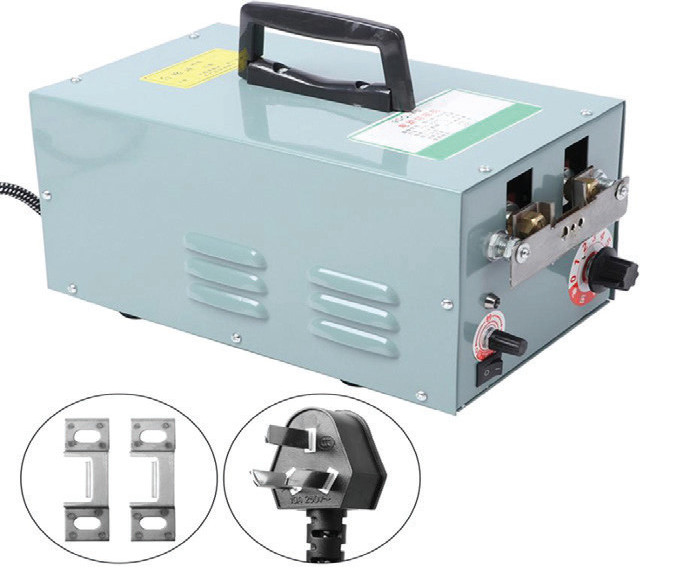
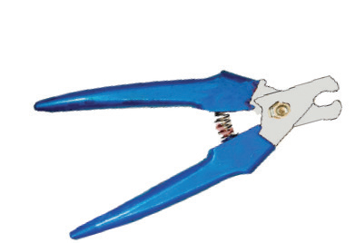
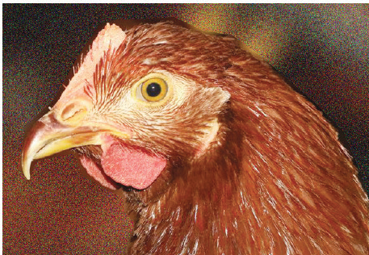
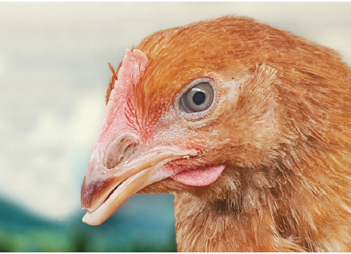

During the rearing (growing) period, observe the age of the birds and see whether the beak is overgrown. In case of overgrowth, the debeaking exercise has to be conducted. It is advisable to trim beaks when birds are about 10 – 12 weeks of age, that is, before laying. Beak trimming at this age causes less stress to birds and beaks will not regrow much. Figures 11.2 (a) and (b) show chicken with untrimmed and trimmed beaks, respectively.


Culling of layer growers
All poor or inferior birds should be removed from the flock because they are not productive. They may harbour and transmit diseases, they occupy spaces which can be used by good layers, and they consume feeds causing high feed costs unnecessarily. Therefore, weekly culling should be done on inferior, crippled, injured and deformed layers.
Catching and general handling
When it is necessary to catch chickens for culling or other purposes, it is advisable to use a poultry-catching tool. The poultry-catching tool catches birds quietly, comfortably and safely. Pullets should also be handled individually when they are